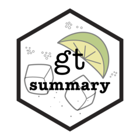

Appendix D — Useful resources
D.1 Reproducible research
- The Turing way (1) ⭐ ⭐ ⭐ ⭐ ⭐
D.2 Git and GitHub
To learn more about this topic, we highly recommend the following resources:
D.3 R programming
D.3.1 Online trainings
- The GRAPH network
- Johns Hopkins University Data Science Lab’s courses
- afrimapr - mapping data in Africa
D.3.2 Packages
| Icon | Name | Description |
|---|---|---|
| tidyverse | Collection of R packages designed for data science | |
| ruODK | ||
|  | gtsummary | |
| skimr | ||
| sitrep |
D.3.3 Books and websites
| R for applied epidemiology and public health (2) | ⭐ ⭐ ⭐ ⭐ ⭐ |
| R for Epidemiology | |
| R4epis | |
| R for Data Science | ⭐ ⭐ ⭐ ⭐ ⭐ |
| Quarto for scientists |
D.3.4 Communities
D.4 Python programming
D.4.1 Packages
D.5 Machine learning
| MOOC | Recommendation |
|---|---|
| Machine learning in Python with scikit-learn | ⭐ ⭐ ⭐ ⭐ ⭐ |
D.6 Open data
D.6.1 Platforms
D.6.2 Data sets
| Dataset | Associated publication(s) |
|---|---|
| Data for Good | |
| Public health hacilities in sub-Saharan Africa | (3) |
D.7 Conferences
https://nef.org/